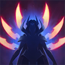

起手裝備
 長劍
長劍

第二件由三相改海妖殺手，配合殞落與滿被動連續普攻；死亡之舞、臨界點、守護天使保留，水星鞋線用於中路魔傷／控制，未照搬上路破船。


五件成裝與鞋子分開列示；起手與核心是購買路線，不是額外佔用的成裝欄位。鞋子完成時機仍依對線壓力與回城金錢調整。


征服者、嗜血與回春保留持續換血及遠程消耗續航；不因參考頁副系即刻衝擊就放棄本頁自保取向。


閃現光盾保留，光盾配合近身長換血而非假設每次都能用小兵撤離。
加點優先：Q > W > E
補得中路專用加點後，改Q>W>E；Q優先刷新與輸出，副W提高減傷技能可用頻率，E一點保留標記。前三級Q/E/W不變。

技能命中敵人會疊加攻速；滿層後普攻造成額外魔法傷害。
突進到敵人身上造成物理傷害；擊殺目標或命中被標記敵人時刷新冷卻。
蓄力時減少承受傷害且此蓄力不會被打斷；放開向前斬擊造成物理傷害，蓄力提升傷害。不是無敵或完全免傷。
先後放置兩片劍刃，劍刃交會時傷害、暈眩並標記命中的敵人。
射出大量劍刃傷害並標記英雄，落地後形成劍陣，穿越的敵人會被緩速。
Q需擊殺或消耗標記才能刷新；E兩片劍刃與R標記分開使用，W不是無敵。
1技收低血兵 → 1技再次刷新 → 3技第一片 → 3技第二片暈眩 → 1技突進 → 普攻
先透過士兵疊被動並準備回程路線，三技命中標記後再突進，確保一技能夠刷新。
4技命中 → 1技吃標記 → 普攻 → 3技暈眩 → 1技再次突進
大絕標記可先刷新一次一技，接著用三技再製造標記；每次突進之間穿插普攻提高輸出。
4技多人標記 → 1技切前排 → 1技轉後排 → 2技減傷 → 3技控制 → 1技收割
不要一次把所有標記吃完，依敵方位置保留可撤退或轉火的標記；受到集火時用二技降低承受傷害。
先用低血量士兵刷新一技並疊被動，滿層後才找長換血。三技兩片刀刃的角度比速度重要，沒有命中標記時不要把一技交到英雄身上。
殞落王者之劍 → 海妖殺手 → 死亡之舞為預設前三件，後接臨界點與守護天使。以滿被動連續普攻作為輸出條件，Q只在擊殺或消耗標記時刷新；水星鞋線保留中路魔傷與控制容錯，不採上路破船單推線。
避免從正面先手吃滿控制，等隊友開戰後切入後排。二技可降低承受爆發並避免被瞬間擊殺，蓄力時間不要貪到錯過位移窗口。
保留伊瑞莉雅中路原有對局並補應對窗口，未搬入baron對線名單。
對局名單是機制與分路判斷，不代表固定勝率；需同時看雙方熟練度、兵線與陣容。
殞落王者之劍 → 海妖殺手 → 死亡之舞為預設前三件，後接臨界點與守護天使。以滿被動連續普攻作為輸出條件，Q只在擊殺或消耗標記時刷新；水星鞋線保留中路魔傷與控制容錯，不採上路破船單推線。
W蓄力時離開嘲諷圈，逼出E後再進場；支援要計入他的R反打。
依本頁目前五件成裝與鞋線替換；同一格多個建議擇一。先看實際傷害和控制，再決定是否犧牲輸出或保命。
高
觸發：先重創小件過渡，需要完整重創成裝時由後段防禦格換生化龐克鏈鋸之劍，保留技能穿透核心。
守護天使 → 生化龐克鏈鋸之劍
先重創小件過渡，需要完整重創成裝時由後段防禦格換生化龐克鏈鋸之劍，保留技能穿透核心。
先重創小件過渡，需要完整重創成裝時由後段防禦格換生化龐克鏈鋸之劍，保留技能穿透核心。
鞋子更換時需連同三級升級路線一起更換；五件成裝不含鞋，主動裝仍占成裝格。
高
觸發：只有護盾持續妨礙擊殺時才換巨蛇鋒牙；原本的守護天使的物防與復活保護會降低。
守護天使 → 巨蛇鋒牙
只有護盾持續妨礙擊殺時才換巨蛇鋒牙；原本的守護天使的物防與復活保護會降低。
只有護盾持續妨礙擊殺時才換巨蛇鋒牙；原本的守護天使的物防與復活保護會降低。
鞋子更換時需連同三級升級路線一起更換；五件成裝不含鞋，主動裝仍占成裝格。
高
觸發：復活甲提供團戰第二次機會，仍須隊友保護復活位置；已有復活甲時保留，別重複購買。
目前配置已包含對應工具；先確認是否能有效使用，不需重複購買。
鞋子更換時需連同三級升級路線一起更換；五件成裝不含鞋，主動裝仍占成裝格。
高
觸發：法術爆發為主時後段改魔提斯深淵；若另外已換盾弓或史特拉克，需重新檢查命脈重複。
守護天使 → 魔提斯深淵
法術爆發為主時後段改魔提斯深淵；若另外已換盾弓或史特拉克，需重新檢查命脈重複。
法術爆發為主時後段改魔提斯深淵；若另外已換盾弓或史特拉克，需重新檢查命脈重複。
鞋子更換時需連同三級升級路線一起更換；五件成裝不含鞋，主動裝仍占成裝格。
高
觸發：魔法傷害與可被韌性縮短的控制占主導時，整條鞋線改水星之靴→鎖鏈軍靴；韌性不縮短擊飛。
目前配置已包含對應工具；先確認是否能有效使用，不需重複購買。
鞋子更換時需連同三級升級路線一起更換；五件成裝不含鞋，主動裝仍占成裝格。
7.3c差異核對：7.3c直接平衡項目屬符文大亂鬥；本頁保留已核對的峽谷配置。版本更新不等於每位英雄都必須更換Tier或裝備。查看整輪校正範圍。
本頁校正版本：7.3c；校正日期：2026-10-25。
參考來源標示版本：7.3c
本輪核對官方版本差異、道具/符文引用、五成裝與鞋線、逐級加點及情境替換一致性。Tier及玩法屬本站編輯判斷，不是官方排名或台服勝率；未公開的全級技能表不推算。
評級理由：7.3c 維持 A（本站判斷）。本站A作需要熟練度的中路鬥士：可借兵線刷新Q接近遠程英雄，但沒有標記或低血兵時進退受限；面對加里歐等反開不能靠評級硬進。 7.3c 未改動此分路的英雄數值，沒有新證據只因版本號而升降。
Riot 官方資料 ↗ · Riot 官方資料 ↗ · Riot 官方資料 ↗ · Riot 官方資料 ↗ · Riot 官方資料 ↗ · WildRiftFire 參考攻略 ↗ · wr-meta.com ↗
7.3c 的直接英雄倍率改動屬符文大亂鬥；本召喚峽谷配置承接 7.3b。未把模式專屬增削轉為峽谷增削。
五件成裝、獨立鞋線、起手、核心、情境替換引用與一般符文列別均重新檢查；移除裝備不列入當前推薦。
歷史資料有後續調整時，以較新版本數值為準。
| 項目 | 調整前 | 調整後 |
|---|---|---|
| 基礎生命 | 690 | 660 |
| 每級生命成長 | 128 | 138 |